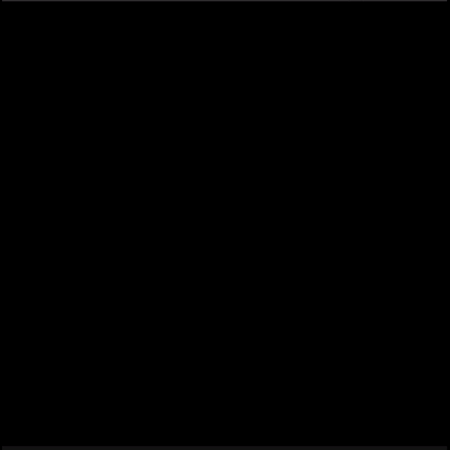
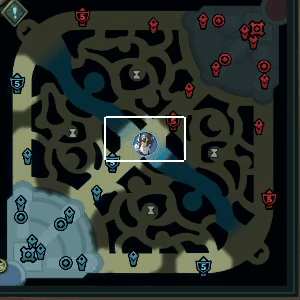
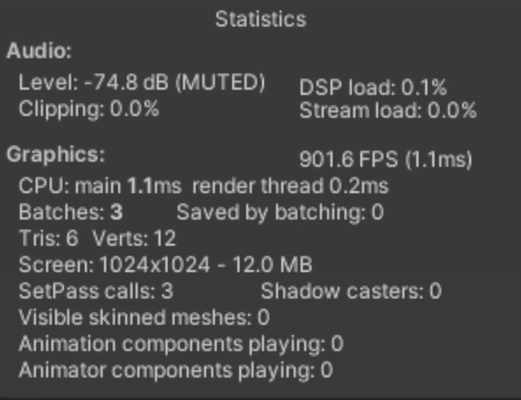

League of Legends: Fog Of War
Exploring the Fog of War system
During the copious amounts of League of Legends I have been playing, something constantly caught my attention(to the point of me losing objectives and CS) was the Fog of War system. More so, how it "bends" around terrain, gets cut off by brushes, and smoothly transitions when vision is acquired and lost. I simply HAD to try and recreate it.
The first step was to acquire the map. I found a top-down view of the Summoner's Rift's mini-map and removed all traversable parts so its alpha would be 0(this is important).
My initial thought was to check the texture in a range around a desired position and if any pixels were "traversable" or had alpha 0. This led me to my first rather useless implementation stage:
Having that working, I moved on to the next stage, introducing the light-like behavior into the system: ray-tracing. Instead of traversing from the position outwards, I moved from the area around inwards. This allowed me to quickly terminate those pixels that began in untraversable non zero alpha areas and improved performance significantly.


The light bends around terrain and flows into new regions. Awesome!
The next thing to be tackled was the brushes. I had to make sure that the light was cut off by the
brushes and that the light would not flow through them. This is where the texture's alpha map came in
handy. I drew in the brush areas with an opacity of 0.5, which I could use in the previous stage to
extend the functionality.
Any pixel in the ray tracing that began in a brush area would continue as normal since you gained vision
outside the brush while sitting in one.
Ratty behavior enabled.

The final and most satisfying part was the transitions when vision is acquired and lost. I used time here to mark when a pixel became lit. If the same pixel remains lit, its time is updated constantly to be the current time. If the pixel moves out of vision, the pixel's value interpolates towards zero at a controllable rate, giving this somewhat ethereal motion accurate of the one in the game.

The system I ended up with can handle about 3000 units with vision at ~1000fps. Noice!

I am expanding this system to handle the concept of teams, more vision elements like wards and
abilities, and using the generated FOW map to transition between "lit" and "unlit" appearances, such as
in the game.
I will prioritize adding the other features. Check the progress and download the demo when it's
available!